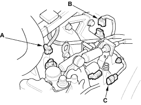
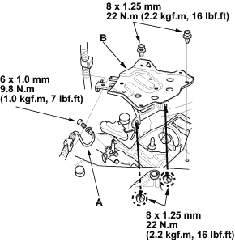

- Connect the back-up light switch connector (A), the vehicle speed sensor (VSS) connector (B), and the reverse lockout solenoid connector (C).

- Connect the transmission ground cable (A).

- Install the battery tray (B).

- Install the intake air duct (see step 31 on page 5-16).
- Install the air cleaner (see page 11-126).
- Install the intake manifold cover (see step 5 on page 5-3).
- Install the battery. Connect the positive (+) cable first, then the negative (-) cable to the battery.
- Refill the transmission fluid (see page 13-4).
- Test-drive the vehicle.
- Check the clutch operation.
- Check the front wheel alignment, refer to the 2001 Civic Shop Manual (see page 18-4).
- Enter the anti-theft code for the radio, then enter the customer's radio station presets.